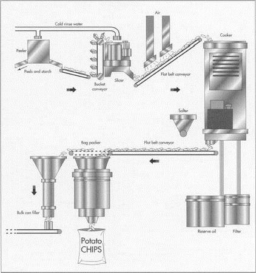
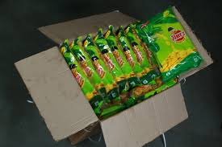

MANUFACTURING PROCESS

• 1 When the potatoes arrive at the plant, they are examined and tasted for quality. A half dozen or so buckets are randomly filled. Some are punched with holes in their cores so that they can be tracked through the cooking process. The potatoes are examined for green edges and blemishes. The pile of defective potatoes is weighed; if the weight exceeds a company's preset allowance, the entire truckload can be rejected.
• 2 The potatoes move along a conveyer belt to the various stages of manufacturing. The conveyer belts are powered by gentle vibrations to keep breakage to a minimum.
Destoning and peeling
• 3 The potatoes are loaded into a vertical helical screw conveyer which allows stones to fall to the bottom and pushes the potatoes up to a conveyer belt to the automatic peeling machine. After they have been peeled, the potatoes are washed with cold water.
Slicing
• 4 The potatoes pass through a revolving impaler/presser that cuts them into paper-thin slices, between 0.066-0.072 in (1.7-1.85 mm) in thickness. Straight blades produce regular chips while rippled blades produce ridged potato chips.
• 5 The slices fall into a second cold-water wash that removes the starch released when the potatoes are cut. Some manufacturers, who market their chips as natural, do not wash the starch off the potatoes. 
Color treatment
• 6 If the potatoes need to be chemically treated to enhance their color, it is done at this stage. The potato slices are immersed in a solution that has been adjusted for pH, hardness, and mineral content.
Frying and salting
• 7 The slices pass under air jets that remove excess water as they flow into 40-75 ft (12.2-23 m) troughs filled with oil. The oil temperature is kept at 350-375°F (176.6-190.5°C). Paddles gently push the slices along. As the slices tumble, salt is sprinkled from receptacles positioned above the trough at the rate of about 1.75 lb (0.79 kg) of salt to each 100 lb (45.4 kg) of chips.
Potatoes arrive daily at manufacturing plants. After they are checked for quality, they are stored at a constant temperature unfil they are processed into potato chips. Some manufacturers treat the potatoes with chemicals to improve the color of the final product. To make the chips, potatoes are fried in either corn oil, cottonseed oil, or a blend of vegetable oils. Flake salt rather than crystal salt is used to season the chips.
• 8 Potato chips that are to be flavored pass through a drum filled with the desired powdered seasonings.
Cooling and sorting
• 9 At the end of the trough, a wire mesh belt pulls out the hot chips. As the chips move along the mesh conveyer belt, excess oil is drained off and the chips begin to cool. They then move under an optical sorter that picks out any burnt slices and removes them with puffs of air.

Packaging
• 10 The chips are conveyed to a packaging machine with a scale. As the pre-set weight of chips is measured, a metal detector checks the chips once more for any foreign matter such as metal pieces that could have come with the potatoes or been picked up in the frying process.
• 11 The bags flow down from a roll. A central processing unit (CPU) code on the bag tells the machine how many chips should be released into the bag. As the bag forms, (heat seals the top of the filled bag and seals the bottom of the next bag simultaneously) gates open and allow the proper amount of chips to fall into the bag.
• 12 The filling process must be accomplished without letting an overabundance of air into the bag, while also preventing the chips from breaking. Many manufacturers use nitrogen to fill the space in the bags. The sealed bags are conveyed to a collator and hand-packed into cartons.
• 13 Some companies pack potato chips in I O cans of various sizes. The chips flow down a chute into the cans. Workers weigh each can, make any necessary adjustments, and attach a top to the can
